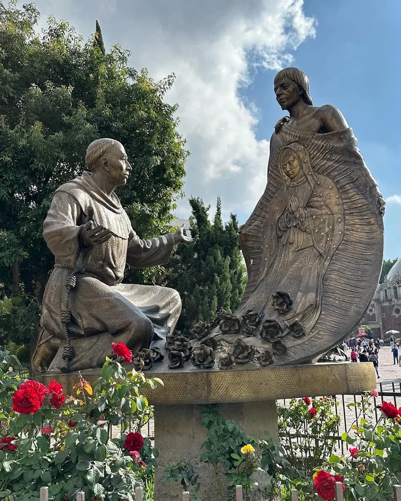
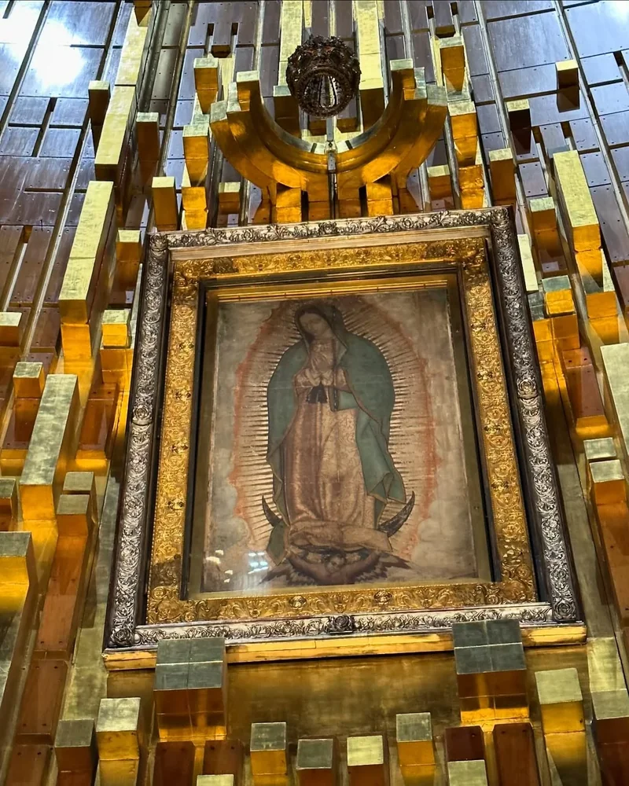

The Guadalupe Jubilee Year runs from October 12, 2026 to October 12, 2027. Pope Leo XIV granted it for the 50th anniversary of the new Basilica of Our Lady of Guadalupe in Mexico City, and anyone who visits it devoutly during the year can gain a plenary indulgence.
This guide explains what the jubilee is, how to gain the indulgence, what to see at the Basilica and Tepeyac hill, when to go and which documents you need to travel from the United States. Our Jubilee Year pilgrimage to Our Lady of Guadalupe, June 4–13, 2027, falls within the jubilee.
Make the Jubilee pilgrimage with us
- Dates:
- June 4–13, 2027 (10 days / 9 nights).
- Destinations:
- the Basilica of Guadalupe and Mexico City, Teotihuacán, Puebla, Cholula and Cancún.
- Shrines:
- Basilica of Guadalupe, Our Lady of Remedies (Cholula), San José del Altillo and Mary, Undoer of Knots (Cancún).
- Accompaniment:
- a spiritual guide, celebration of the Eucharist and a professional tour guide.
- Departures:
- from any city in the United States or anywhere in the world, and from Bogotá. We help you coordinate flights and connections to join the group.
- Price:
- USD 2,700 per person, with round-trip flights, an internal flight to Cancún, 9 nights of lodging, transportation, entrance fees and a guide.
- Payment plan:
- reserve with USD 499 and pay the rest in 6 payments of USD 367 or 3 of USD 734.
What is the Guadalupe Jubilee Year, and when does it start?
It is a year of grace that Pope Leo XIV granted, through the Apostolic Penitentiary, from October 12, 2026 to October 12, 2027. It marks the 50th anniversary of the dedication of the new Basilica of Guadalupe and the transfer of Our Lady's image to it on October 12, 1976. Cardinal Carlos Aguiar Retes, Primate Archbishop of Mexico, announced it, and it opened with a solemn Mass at the Basilica.
The jubilee is also a step on the road to 2031, the 500th anniversary of Our Lady's apparitions to St. Juan Diego. The Church in Mexico is praying a nine-year novena of preparation, and the Mexican bishops have invited the bishops of the United States and Canada to join it.
To avoid confusion: Spain also has a jubilee at the Royal Monastery of Guadalupe in Extremadura. This guide is about the Basilica of Guadalupe in Mexico City.
How to gain the plenary indulgence at the Basilica of Guadalupe
During the Jubilee Year, the plenary indulgence can be gained under these conditions:
- Visit the Basilica of Guadalupe devoutly, with a contrite spirit and free from all attachment to sin.
- Take part in a liturgy there or spend time in prayer.
- Go to confession and receive Holy Communion, during the visit or in the days just before or after.
- Pray the Creed and pray for the Holy Father's intentions.
The indulgence can be applied to yourself or to the souls in Purgatory. On our pilgrimage, the visit to the Basilica and the group's Masses help you fulfill these conditions without rushing.
The story: the apparitions at Tepeyac in 1531
According to the tradition recorded in the Nican Mopohua, between December 9 and 12, 1531, Our Lady appeared on Tepeyac hill to Juan Diego, a recently baptized Indigenous man, and asked that Bishop Juan de Zumárraga build a church there. As a sign, Juan Diego brought the bishop roses cut at the top of the hill, wrapped in his tilma (cloak). When he opened it, the image of Our Lady venerated today in the Basilica appeared imprinted on it.
One of Our Lady's phrases to Juan Diego, “Am I not here, I who am your Mother?”, is written on the facade of the new Basilica. St. John Paul II canonized Juan Diego in 2002. In 1999, the same Pope called Our Lady of Guadalupe “Mother and Evangelizer of America” and asked that her feast, December 12, be celebrated throughout the continent.

What to see at the Basilica of Guadalupe
The Basilica of Guadalupe is not a single church but a complex of churches, chapels and gardens at the foot of Tepeyac hill, in northern Mexico City. These are the main places:
- The new Basilica (1976): home of St. Juan Diego's original tilma, behind the main altar under a large cross and visible from anywhere in the church. Moving walkways beneath the altar let you pass very close to the image.
- The old Basilica: built between 1695 and 1709, it housed the image until 1976. Sinking ground made a new church necessary. Today it is the Expiatory Church of Christ the King.
- The Capilla del Cerrito: at the top of Tepeyac, where tradition says Juan Diego cut the roses. You climb up by stairways and gardens with views over the city.
- The Capilla del Pocito: a jewel of Mexican Baroque built in the late 18th century over a well that tradition considers miraculous.
- The Capilla de Indios: from 1649. It held the image while the old Basilica was being built.
- The Basilica Museum: in the former Capuchin convent, with Guadalupan art and votive offerings.

The Basilica offers official guided visits by reservation. Visit and Mass schedules change, so check the Basilica's official website before you go.
When to visit the Basilica of Guadalupe
- December 12: the feast of Our Lady of Guadalupe draws millions of pilgrims in the days before, with Las Mañanitas on the night of the 11th to the 12th. It is a very intense experience, with huge crowds and long waits.
- The best day for a quieter visit: a weekday morning outside December. Sundays tend to be busier.
- Weather: Mexico City sits at about 7,350 feet (2,240 m). From June to September it often rains in the afternoon, so bring an umbrella or rain jacket.
- The whole Jubilee Year is a good time: the indulgence can be gained on any day until October 12, 2027.
Tips for your visit
- Altitude: take it easy the first day, drink plenty of water and avoid heavy meals.
- Comfortable shoes: the atrium is huge and the climb to the Cerrito has stairs.
- Appropriate clothing: dress modestly to enter the churches.
- Your belongings: on crowded days, carry only what you need and keep an eye on your bag.
- Intentions: bring a written list of your family's intentions and those entrusted to you.
Traveling from the United States: documents and cost
These are the usual documents to visit Mexico as a tourist. Always confirm them before you travel:
- U.S. citizens: a valid U.S. passport book. The passport card is not valid for air travel.
- Permanent residents (green card): your valid permanent resident card and a valid passport from your country. You don't need a Mexican visa for tourism.
- With a valid U.S. visa in your passport, you also don't need a Mexican visa for tourism.
- If you have another immigration status or a pending case, talk to an immigration attorney before leaving the United States, because what matters is being able to return.
When you arrive by air, the tourist permit (FMM) is handled at the airport, and its fee is usually included in your ticket.
How much does a trip to the Basilica of Guadalupe cost? It depends on your departure city, the season and what the trip includes. Our pilgrimage costs USD 2,700 per person from the United States or Bogotá, with flights, lodging, transportation, entrance fees and a guide. You can reserve with USD 499 and pay the rest in installments. Wherever you live, read how our pilgrimages from the United States work.
Go as a group: more than the Basilica
Beyond the Basilica, the Jubilee Year pilgrimage includes other Marian shrines and places of faith:
- Mexico City: the Zócalo, the Palace of Fine Arts and Paseo de la Reforma, and the church of San José del Altillo, where Blessed Concepción Cabrera de Armida is buried.
- Teotihuacán: the ancient pre-Hispanic city.
- Puebla and Cholula: the Shrine of Our Lady of Remedies and the Convent of San Gabriel.
- Cancún: the shrine of Mary, Undoer of Knots, and a few days of rest by the Caribbean.
You travel accompanied, with celebration of the Eucharist, times of prayer and everything organized, so you can focus on your encounter with Our Lady.
Make your Guadalupe Jubilee Year pilgrimage with us. From June 4 to 13, 2027 we will make a pilgrimage to the Basilica of Guadalupe, Cholula, Puebla and Cancún, for USD 2,700 with flights from the United States included. You can join from any U.S. city — Los Angeles, Dallas, Houston, San Antonio, Chicago or your own — or from anywhere in the world. Message us on WhatsApp and we will send you the details.
💬 Message us on WhatsApp View the 2027 Guadalupe pilgrimageSources: EWTN News: Pope Leo XIV grants jubilee year for the 50th anniversary of the new Basilica (September 11, 2026); Aleteia: Pope grants Guadalupan jubilee ahead of 500th anniversary (September 11, 2026); Basilica of Guadalupe: guided visits (in Spanish); St. John Paul II, Ecclesia in America, no. 11; Consulate of Mexico in Phoenix: visas and visa-exempt travelers (in Spanish).